4,222 Introduction to Programming
Lecture 2: Introduction to Git
Goals for today
In this lecture, we will:
- understand what is version control to collaborate
- know basic commands in Git
In the next lecture, we will
- create a GitHub account
- learn how to collaborate with a remote repository with Git and GitHub
Prerequisites for today
- You have installed Git on your computer
- You have installed VSCode and the Git extension (part of the data science profile)
Git feels complicated at first!!!
- I am trying to give you a good intuition for how it works and what it does.
- You will need to practice to get used to it.
- Don’t worry if you don’t understand everything at first, just try to get the general idea and we will practice in the exercises.
What is Git?
A daily situation…
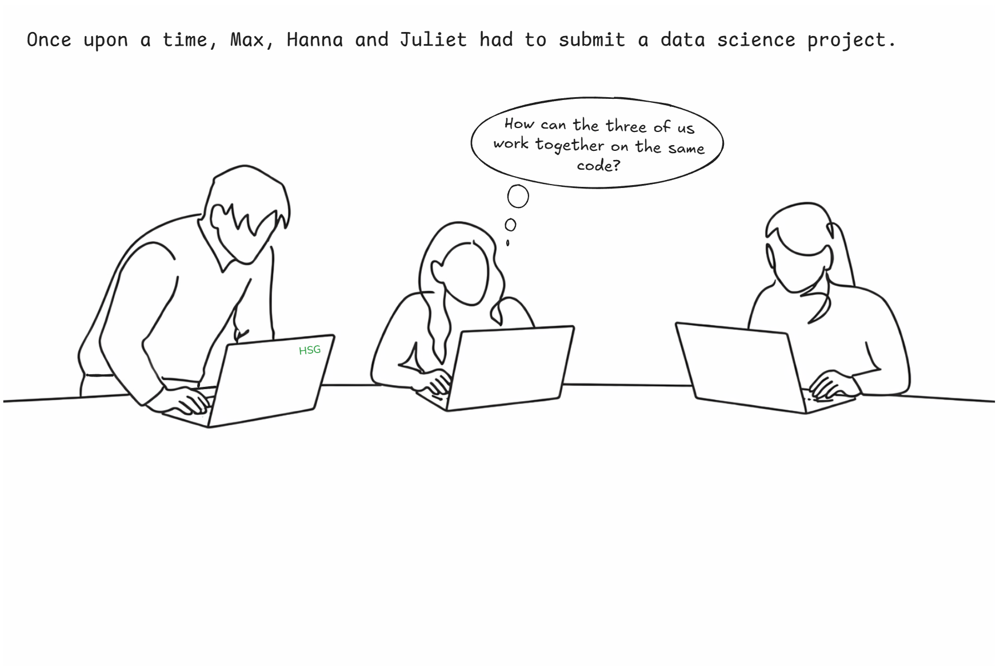
A daily situation…
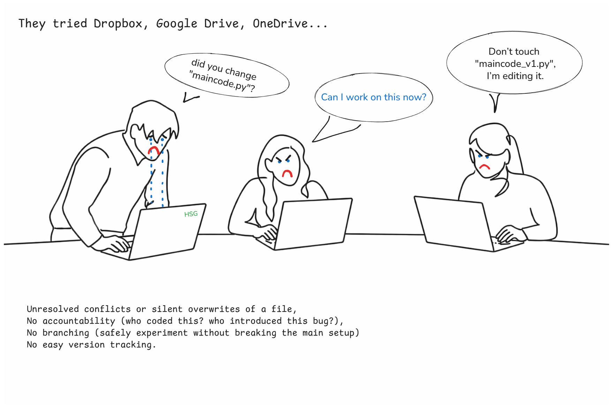
A daily situation…
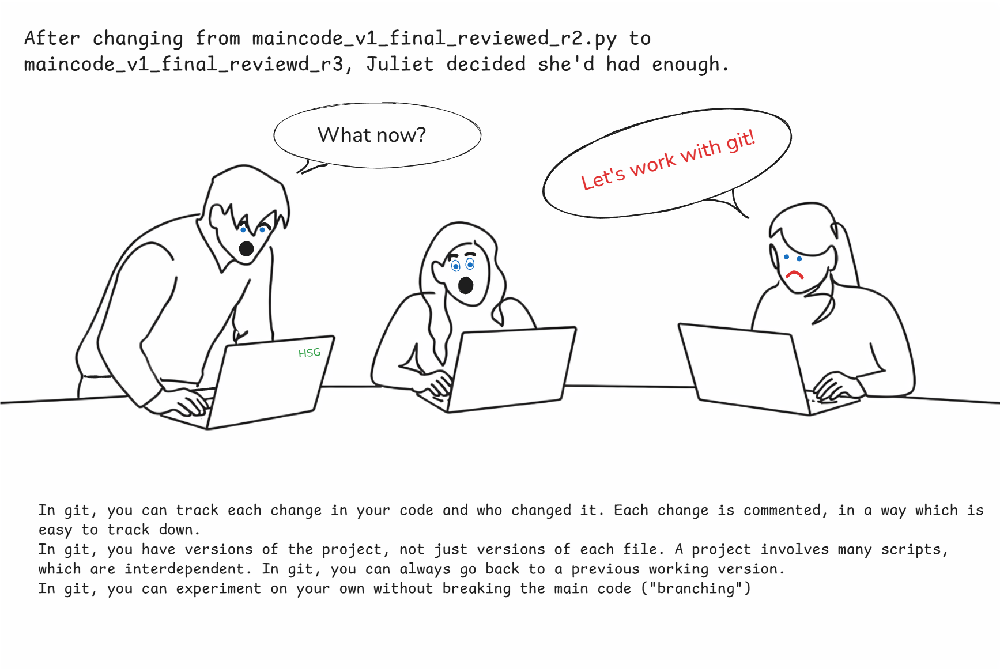
A daily situation…
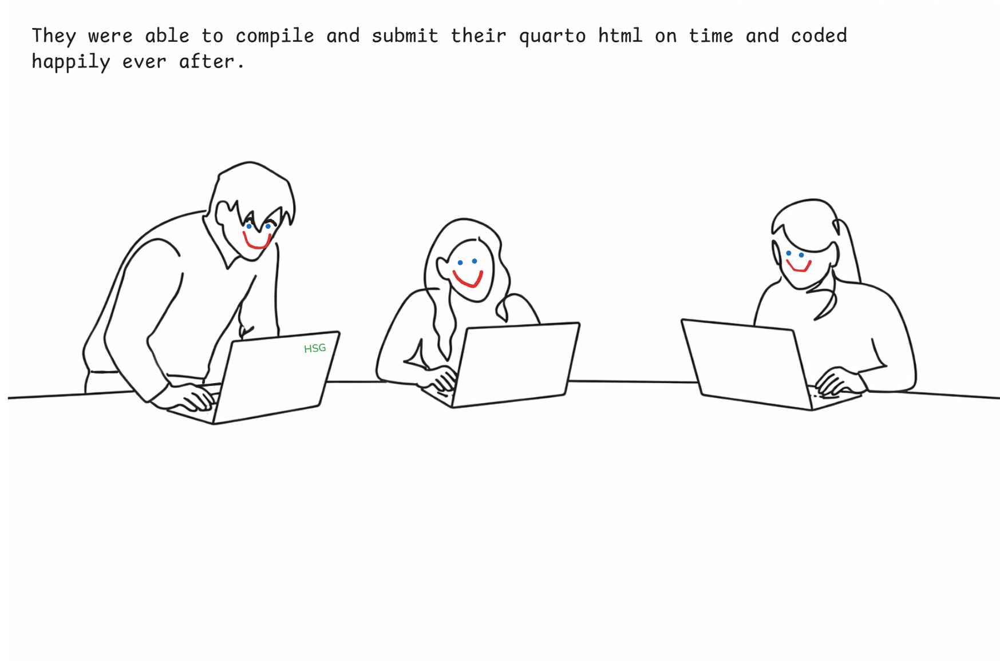
What is Git?
Version Control System (VCS)
- Looks at the changes in your files
- Records all changes over time to give you a full history
- Similar to “track changes” in Microsoft Word
Git only looks at and tracks the changes in a file
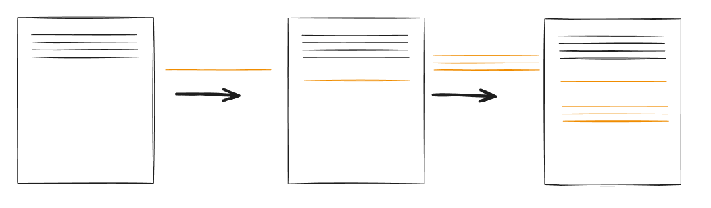
Why should we learn Git?
- Very hard to lose files with Git
- Great for collaboration
- History allows you to go back and understand changes or revert when there are problems
- Reproducibility
- In demand for any data science job
Git and the Command Line Interface (CLI)
Git is usually used from a CLI (like a terminal)
- Learn Git commands and use them in a terminal.
- Very flexible, but a bit unintuitive
But also from Graphical User Interface (GUI)
- Most applications nowadays: GitHub Desktop, VSCode extension, RStudio
- Often easier to use and no commands needed.
- Easier to visualize the steps.
In this course
We will learn the basic commands of Git in a Command-Line Interface (CLI), and we will use the GUI in VSCode
All the commands we will learn are available in the official Git Cheat Sheet. Please download the sheet.
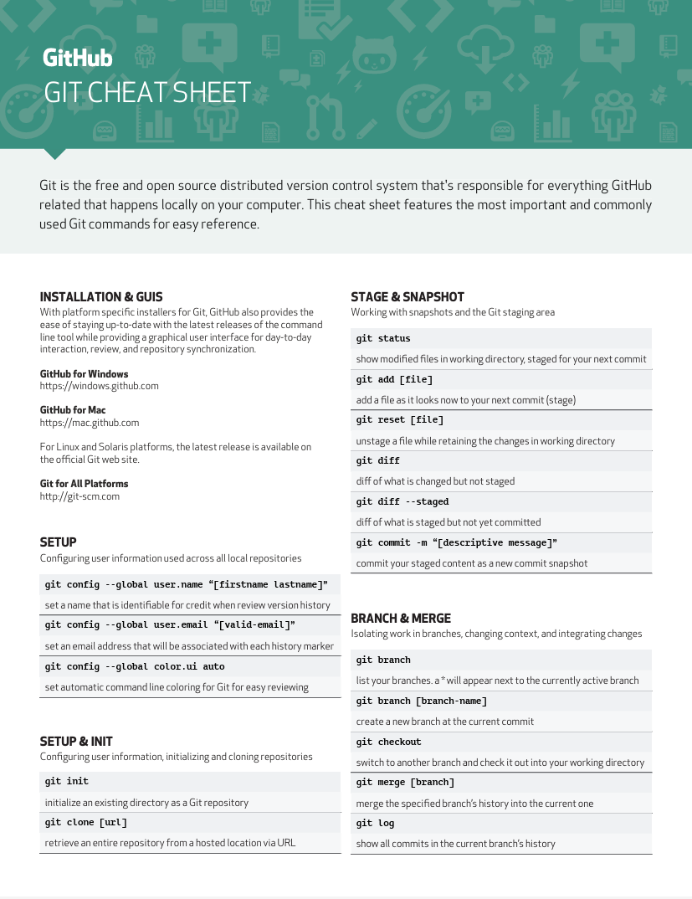
Setting up Git
From the CLI:
- In VSCode, open a terminal and select Git Bash (Windows) or bash (Linux/MacOS).
OR:
- On Windows, open Git Bash (start menu -> Git Bash). Make sure you’ve installed Git beforehand.
- On MacOS, open the Terminal app.
- Let’s do this together now!
Setting up Git
Run the following commands in your terminal to correctly configure Git on your computer.
# Add your name
git config --global user.name "Your Name"
# Add your email address
git config --global user.email "your.email@unisg.ch"
# Use modern main branch name
git config --global init.defaultBranch mainA detail (you only need to do this once at config, not to remember for the course):
# For Linux/Mac:
git config --global core.autocrlf input
# For Windows:
git config --global core.autocrlf trueWhy? Windows saves linebreaks (enter) differently then Linux/Mac does. Remember Data Handling (Linux / macOS: LF \n, Windows: CRLF \r\n). Git may interpret this as code changes. This setting prevents unnecessary diffs and conflicts.
Git: intuition
We start from a local directory
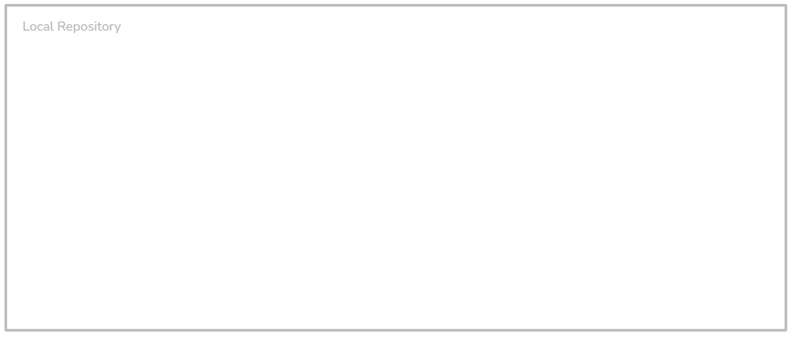
- A project in Git is called a repository (or repo for short) and it always corresponds to a directory on your machine. This is usually where you save your project.
- Git always works locally first (nothing shared).
Working in your directory as usual
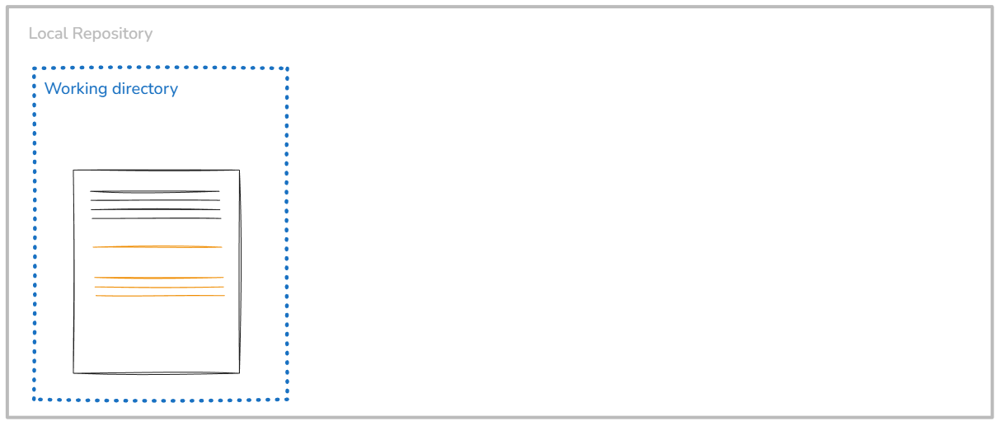
- The working directory is where you write code, edit files, run scripts, etc.
- Files here may be untracked, modified or unfinished
- Saving a file only affects the working directory. Git does nothing yet.
We select files to be tracked
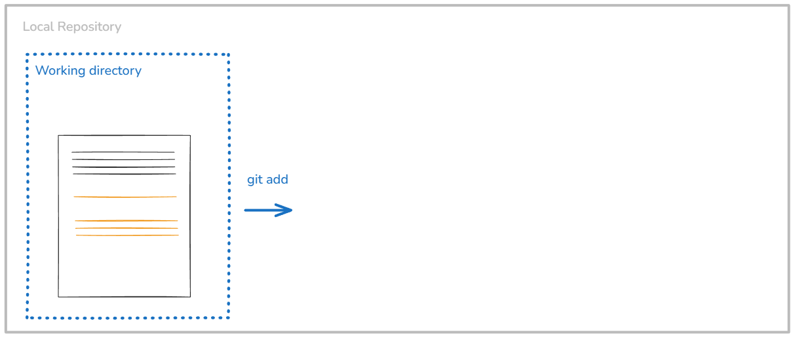
- Use
git addto select the files that you want to include in your project history, that you want to track, and that you want to share with others.
We add files to the staging area
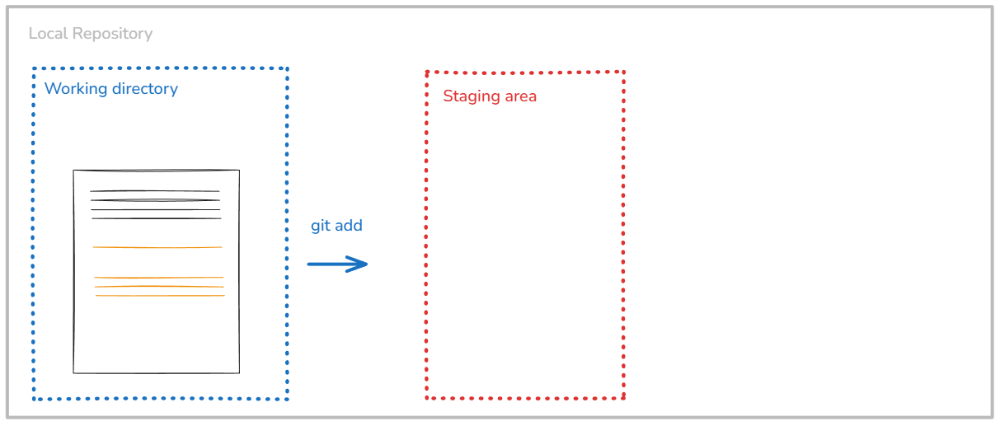
- The staging area is a list of changes you are about to record.
- It is not a folder and not a backup.
- You can stage edits that logically belong together. Example: You edited 5 files but only 2 are ready.
We commit the staged changes
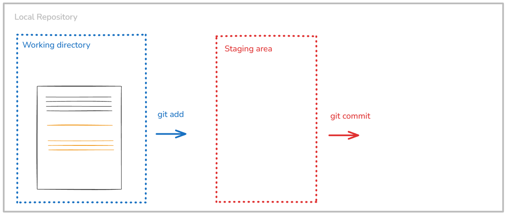
- Use
git committo record the staged changes and creates a snapshot in time. - It adds a message explaining why the change was made.
- ! Commits are: permanent, ordered, traceable, attributable to a person
We now have a Git repository

- A Git repository is the history of your project.
- It contains all commits, who changed what, when and why.
- This is what enables undoing mistakes, collaboration, branching, merging
We can then share our repository with others

- For next week!
Summary
Three levels: changes can be either unstaged, staged or committed.
- When we first make a change it is unstaged
- Once we add the change to the staging area it is staged
- We can then commit all staged changes
Files are added to the staging area with git add <path to file or directory>
All files in the staging area are committed with git commit
Let’s start
Initialize a Git repository
Remember our folder structure:
Introduction_to_programming/
├── github_course_materials/ # is empty for now, you will clone the Git repo in week 3
├── exercises/ # Student's own work
│ ├── week_01/
│ ├── week_02/
│ ├── ...
│ ├── week_12/
├── group_project/
│ ├── ...We will initialize a repo in the exercises folder. You will have to initialize another repo in your group_project folder.
Initialize a repo
This is done via the init command.
In your terminal from VSCode, navigate to your cd Introduction_to_programming/exercises. Then:
git init
# Initialized empty Git repository in /Users/Introduction_to_programming/exercisesWith git init we turn the directory into a repository.
At this point, 🗂️ tracking has started!
Add a file to the staging area
Let’s write a text file example.txt using our terminal.
echo first steps in git > example.txt # Windowns (cmd)
echo "first steps in git" > example.txt # Mac/Linux (bash)Both create the same file content. Verify:
cat example.txt # Mac/Linux
type example.txt # WindowsAdd example.txt to the staging area. Changes are added to the staging area with git add <path to file or directory>.
git add example.txt- You can use
git add .to add all unstaged changes in the current directory to the staging area (beware of sensitive files!) - You can also use
*to represent any sort of filename e.g. add all .txt files via*.txt
Seeing Changes: git status 👀
You can see the high-level changes and what is about to happen with git status
git status
# On branch main
# No commits yet
# Changes to be committed:
# (use "git rm --cached <file>..." to unstage)
# new file: example.txtLet’s change the content of “example.txt”. Save it, then run:
git status
# No commits yet
#
# Changes to be committed:
# (use "git rm --cached <file>..." to unstage)
# new file: example.txt
#
# Changes not staged for commit:
# (use "git add <file>..." to update what will be committed)
# (use "git restore <file>..." to discard changes in working directory)
# modified: example.txtTracking Changes: git commit
All changes in the staging area are committed with git commit. Every commit needs a message!
Let’s add and then commit the new change
git add example.txt
git commit -m "Creating example.txt"
# [main (root-commit) fc0372c] Creating example.txt
# 1 file changed, 1 insertion(+)
# create mode 100644 example.txt
git status
# On branch main
# nothing to commit, working tree cleanOnce a change is committed it becomes significantly harder to remove it.
Commit messages
- “Add GDP data cleaning function” ✅
- “Update code” ❌
- “Fix missing values in
clean_gdp_data()” 😋 - “small changes” 🤯
- “final final push to main” 😤
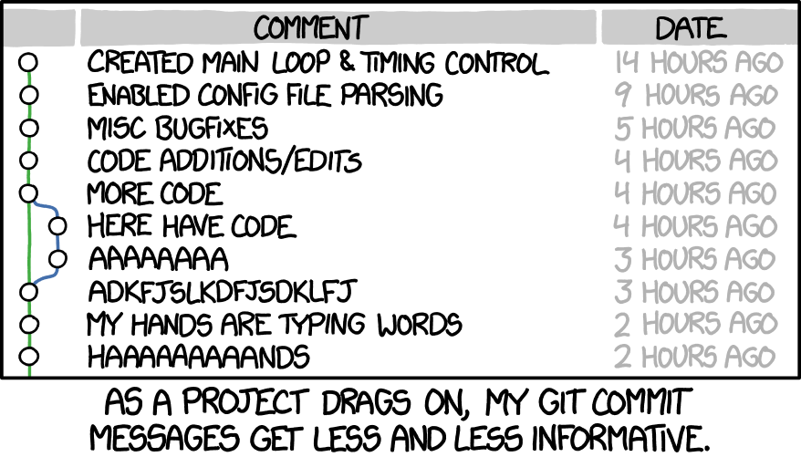
A good commit message: “What & Why”
- Keep it short and specific (< 50 characters)
- Use imperative mood: “Add”, “Fix”, “Update” (not “Added”, “Fixed”)
Ignoring the ignorable: .gitignore
By default, Git will track all the files in your repository.
- If you want it to ignore certain files or filetypes, you have to tell it so explicitly.
- For instance: outputs that can be re-generated by your code, like intermediary data sets (csv), pdf reports that are automatically computed, graphs,
.DS_Storefiles on MacOS. - You also want to ignore
.venv/: this directory is machine-specific (environment realization). However, you must trackpyproject.tomlanduv.lock(environment definition).
You can do this by using a file called .gitignore
- Every file will be compared against the list in
.gitignoreand if it matches, Git will ignore the file - (The
.gitignorefile itself is tracked just like any other file)
Ignoring the ignorable: .gitignore
Classic example of a .gitignore file
# Ignore every file called myfile.pdf
myfile.pdf
# Ignore the file called data_countries.csv in the folder data at the root of your repository
/data/data_countries.csv
# Ignore all data and generated outputs
*.csv
*.xlsxDo not store data on Git -> .gitignore
Branches and merging
A project becomes a series of commits
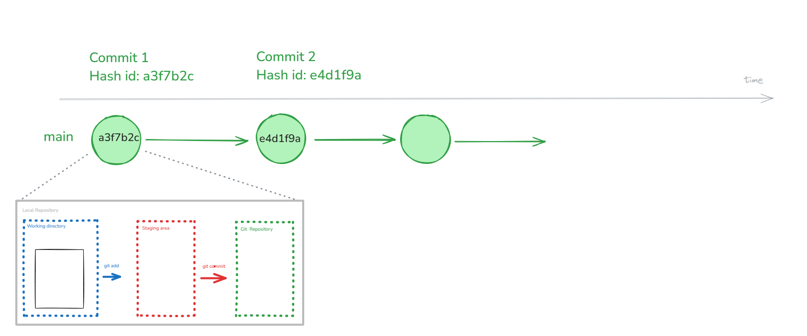
- Git repository is the history of your project and contains all commits.
- Each commit is identified with a unique commit id (a hash), which is 40 hexadecimal characters long. The short form typically shown is 7 characters.
Time-travel: git checkout for commits
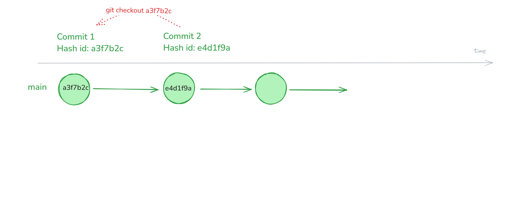
- Go to any old commit with
git checkoutby referencing the hash:git checkout a3f7b2c - This is for viewing history, not for switching branches (use
git switchfor branches!) checkoutsends you out of a branch, i.e. detached HEAD. You need to explicitly switch to main (or to any other branch).
A note on detached heads
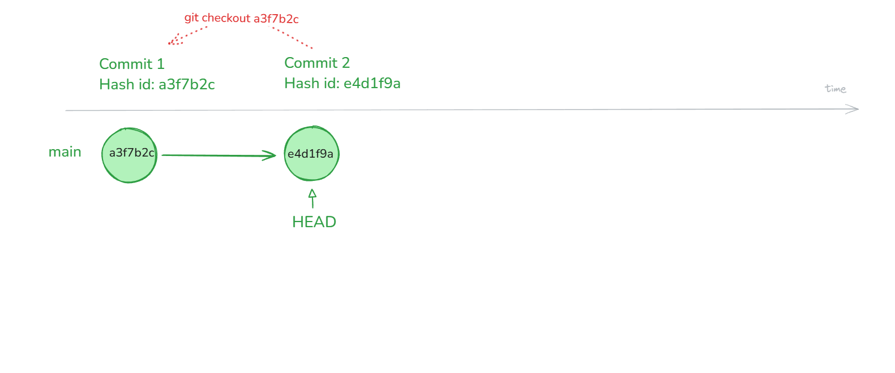
- HEAD is Git’s pointer to your current position in the project.
- It normally points to a branch that moves forward with commits.
A note on detached heads
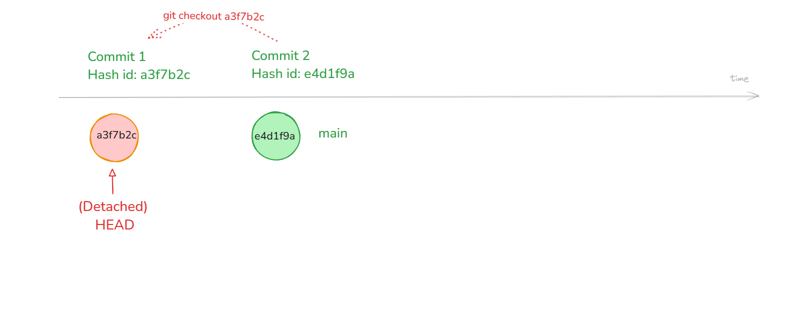
- HEAD points to a specific commit, not the main branch! From the commit, you can look around and experiment
- Commits made here won’t be on main. Use
git switch mainto get back to the main branch.
What are Git branches? 🌳
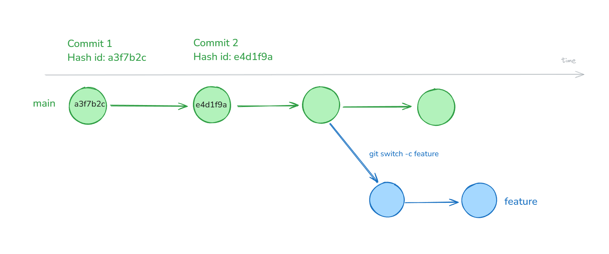
- Branches are alternate realities: they allow you to have different versions of your code within the same repository next to each other
- You can switch back and forth between branches
Create a new branch 🌳
- Use
git switch -c my-branch: creates a branch and checks it out (you are leavingmainand working on your new branch) - You can work on your new branch as usual.
- Use
git statusto be aware on which branch you are on. - Use
git branchto check the existing branches. - Use
git branch -d <branch-name>to safely delete (-d) a branch after it’s merged. - Use
git switch my-branchto switch branches.
Since Git 2.23, git switch is the recommended alternative to git checkout for switching branches.
Why would you ever want to branch, and how often?
Why branch?
- To experiment: try new ideas without risking the working version of your code
- To work in parallel: multiple people can work on different features at the same time
- To isolate changes: keep unfinished work separate from the main branch, e.g., when you are working on a piece of code that is not ready yet.
How often?
- In my experience: branch often
- Often it depends on the “merging policy” of your team.
Merging 🔀
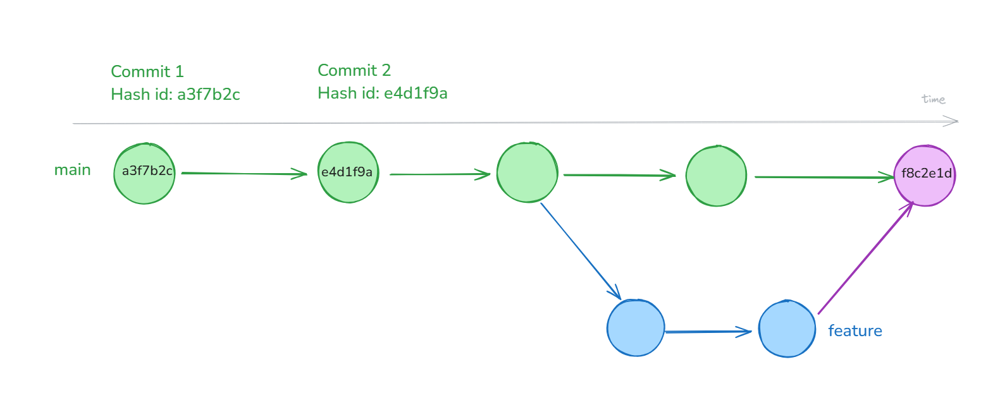
- In the end you can merge your changes back into your main branch
- You can combine two different branches by merging them using
git merge my-branch
Merging 🔀
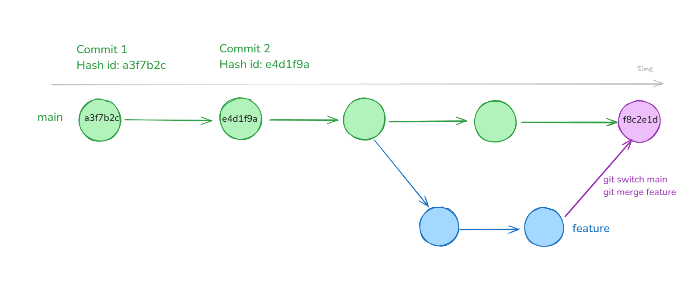
git merge <branch>merges the named branch into your current branch (usuallymain)- Merging will create a new “merge” commit
Merge conflicts ⚔️

Merge conflicts ⚔️
Merge conflicts occur when there are edits to the same file (and at the same location) on two different branches
- When combining changes from two branches, there is not always a clear solution.
- If Git doesn’t know how to merge the two branches, we get a merge conflict
- Merge conflicts have to be manually resolved
- DON’T PANIC
If you merge your branches / edits before making more changes, you can avoid conflicts
Illustration for merge conflicts
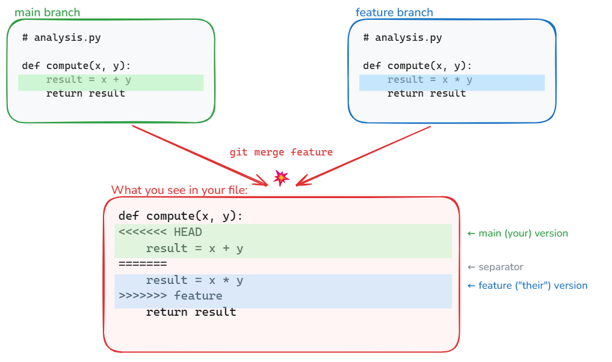
Resolving merge conflicts
- To resolve a merge conflict, you will have to go through changes one by one and pick one of the two versions
- Determine which files are in conflict with
git status - Once a solution is picked for every conflict you can add the file, commit the solution and the merge continues / finishes
- Picking a solution is easiest to do by using GUI tools
Example of a merge conflict
<<<<<<< HEAD
<div id="footer">contact : email.support@github.com</div>
=======
<div id="footer">
please contact us at support@github.com
</div>
>>>>>>> branchIn this conflict, the lines between <<<<<< HEAD:index.html and ====== are the content from the branch you are currently on.
The lines between ======= and >>>>>>> issue-5:index.html are from the feature branch we are merging.
<div id="footer">
please contact us at email.support@github.com
</div>To resolve the conflict, edit the whole section until it reflects the state you want in the merged result. Remove the conflict markers <<<<<<, ====== and >>>>>>>.
Then run git add index.html and git commit to finalize the merge. CONFLICTS RESOLVED.
Example from Happy Git with R
Abort
If, during the merge, you get confused about the state of things or make a mistake:
- use
git merge --abortto abort the merge and go back to the state prior to runninggit merge. - Then try to complete the merge again.
Last words
Self-study
Once you’ve recovered from the lecture, please read the next three slides.
Thanks for your attention
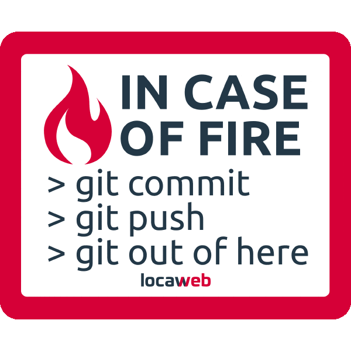
Sources
- Jan Simson, Intro to Git
- Jennifer Bryan, Happy Git and GitHub for the useR
Self-study
Self-study
Once you’ve recovered from the lecture, please read the next three slides.
Additional Git commands
git diff: changes between your working directory and staging area (unstaged changes)git diff --staged: changes between your staging area and the last commit (what will be committed next)git reset: reset your staging area (usegit reset <filename/directory>for specific files)git restore --staged <file>: used to undo the effects ofgit add(unstage a certain file and undo a previous git add)git restore <file>: discard local changes in a file, restoring its last committed state. Undo any changes to files (go back to last commit stage). Cannot be undone 💪git log: see the history of your commits (who changed what, when and why). You can move up and down with the arrow keys and leave the log view by pressingq. Usegit log --onelineto see the log in a compact way.
The anatomy of a Git command 🔍️
Git commands, like many other CLI tools follow a certain structure:
git <command> [flags/options] [arguments]
git status
git commit -m "Adding example.txt" # -m for message
git config --global user.name "Your Name" # --global for setting the configuration globallyWith -h you can get help on any Git command 🚨
git status -h
git commit -hStuck in an editor? Breaking free ⛓️💥
- Git sometimes opens a text editor (for merge commits, etc.), and you might be stuck in it (it happens to me all the time).
- Also, this happens if you run
git commitwithout the-moption. Every commit needs a message. If you don’t provide one, Git will open a text editor in the current terminal so you can write the commit message manually.
Stuck in an editor? Here’s how to escape
If you’re in vim (the default):
- Press
Esc(make sure you’re in normal mode) - Type
:wqthenEnter→ save and quit - Or type
:q!thenEnter→ quit without saving
If you’re in nano:
Ctrl + OthenEnter→ saveCtrl + X→ exit
Avoid this altogether:
git config --global core.editor "code --wait"This tells Git to use VS Code instead of vim/nano.